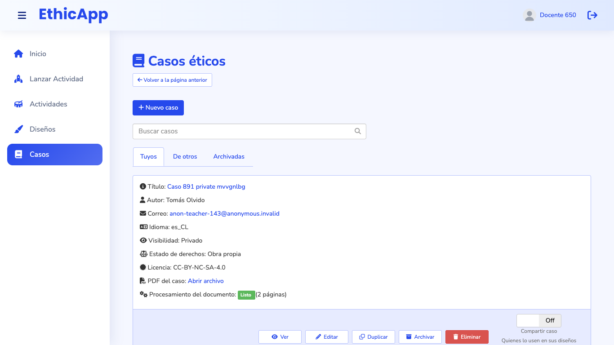
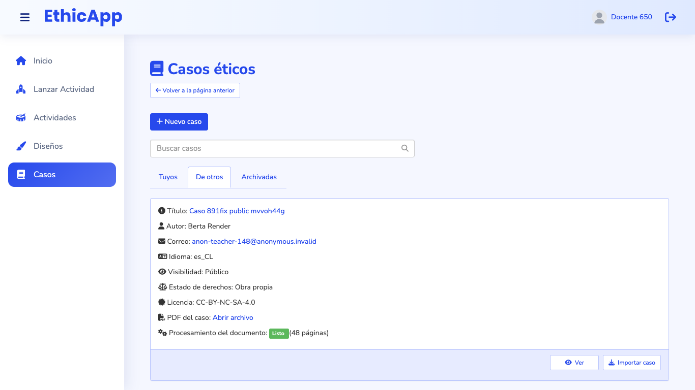
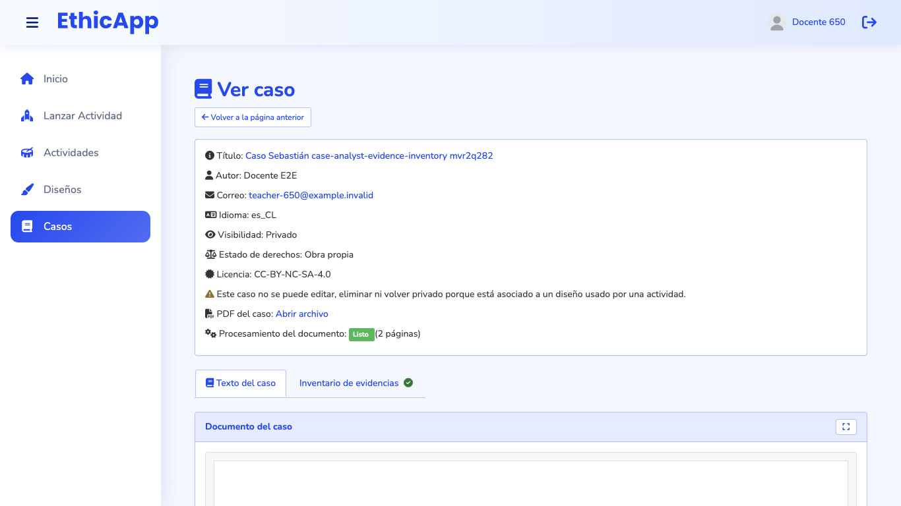

Low fidelity. The proposal brings the cases page and the case view into the design language of the new Diseños page (epic #966): a role line, tabs with counts, a table with one status column and one visible action per row, a row menu, confirmations and notices. Each frame is drawn at its real viewport size and scaled down; the dashed line is the fold. Labels are in Spanish, as a teacher sees them in es-CL. Titles, cases and people are fictional.
fold (bottom of the viewport)numbered notes, explained under each frame
Where Casos sits
A case is the material a design is built on. Casos manages that material; Diseños turns it into activities. Today the cases page still has the old card layout that Diseños left behind.
Casos (this proposal)
Diseños (docs/design/designs-index, implemented)
Job
Write or upload cases, add their material, decide which to share, import cases other teachers shared.
Create, edit, organize and share designs; import designs other teachers shared.
What a row says
Whether the PDF is ready, whether the case is in use, how many designs use it (yours and other teachers'), whether it is shared.
Whether the design is ready, has errors or is in use, and whether it is shared.
Primary action
"Nuevo caso"; per row, "Editar", "Reemplazar PDF" or "Duplicar para editar"; in "Compartidos por otros", "Importar".
"Nuevo diseño"; per row, "Editar", "Corregir" or "Duplicar para editar"; "Importar".
Bridge to the other
The role line links to Diseños; the row menu and the case view offer "Nuevo diseño con este caso".
The row's meta line names the case.
Open questions (see the README):
Can a case be deleted while other teachers' designs use it? The proposal says no, after epic #923: their designs would silently lose their case.
Should "Nuevo diseño con este caso" exist? It needs the design form to accept a case.
Is the case view's history of uses (which designs use the case) worth a server change?
Today

1366 × 768, first screen ("Tuyos"): the first card's nine lines of details, and at the fold its five buttons and the "Compartir caso" switch.

"De otros": the same card, with "Ver" and "Importar caso". Nothing says what importing does, or that a shared case can be used without importing it.

The case view: the same card, without actions, then the case's tabs. The document starts at 625 px; to edit the case the teacher goes back to the list.
A. 1920 × 1080: my cases
The page says what it is for and where cases are used: "Sube tus casos, agrega su material y decide cuáles compartir, o importa los que otros docentes comparten. ¿Quieres usar uno con tus estudiantes? Crea un diseño →".
Page actions: "+ Nuevo caso" (primary) and "Importar caso compartido", which opens the "Compartidos por otros" tab. "Volver a la página anterior" goes away.
Tabs with counts: "Mis casos", "Compartidos por otros", "Archivados" (today "Tuyos", "De otros", "Archivadas"). Tab and filters are part of the URL.
Filters: search over title, author and tags; status chips "Todos", "Listos", "En uso", "Compartidos", "PDF con error · 1". The order is stated.
One table row per case:
Caso: title; under it the pages, the material (videos, documents) and the language. A click on the title opens the case view.
Estado: "● Listo"; "⟳ Procesando PDF"; "⚠ PDF con error", where students see the PDF instead of the pages; or "🔒 En uso · 3 actividades", which cannot be edited, deleted or made private. Today these are three separate lines of the card.
Diseños: how many designs use the case, and how many of them belong to other teachers. This is what sharing and deleting affect, and today it is not shown anywhere.
Compartido: the switch that makes the case public, with today's publication confirmation (#939). A shared case in use cannot be made private, so its switch is locked.
One visible action per row: "Editar"; "Reemplazar PDF" when the PDF could not be processed; "Duplicar para editar" when the case is in use.
The row menu (open on the second row): Ver, Nuevo diseño con este caso, Duplicar, Archivar, and Eliminar, last. Eliminar is disabled, with the reason, when the case is in use or when other teachers' designs use it.
B. 1366 × 768: cases shared by others, after an import
What the tab holds: cases other teachers shared. The banner says the two ways to use one, which today the page does not tell: choose it directly in a design, or import a private, editable copy.
Rows show what matters to decide: author, language, license and rights.
"Importar" is the row's only action. A case already imported shows "Importado · Ver copia" instead.
After importing, a notice names the copy and offers "Editar copia" and "Ver en Mis casos". Today it says "Caso importado" and the page jumps to "Tuyos".
C. 1366 × 768: deleting asks first and says what it affects
Eliminar asks for confirmation. Today it deletes at once. The dialog says what goes with the case: its PDF and pages, videos, documents and AI analyses.
It names the teacher's designs that lose their case, which today happens silently (designs.case_id is ON DELETE SET NULL). Copies of the case stay, with their source title, author and license.
It offers the reversible alternative, "Archivar en su lugar".
D. 1366 × 768: the case view
A head like the design view's: "← Casos" returns to the list with its tab and filters; the title is the case's own title, not "Ver caso".
The case's actions are here, with the same rule as the row: "Duplicar para editar" for a case in use, "Editar" otherwise, and the rest in "⋯".
Facts as one line of chips instead of nine lines: state, sharing, language, license, rights, pages. Attribution and license notes stay, in the "Derechos" tab.
Where it is used: the teacher's designs that use the case, as links, and how many designs of other teachers keep it. A private case that other teachers keep says so here (#939).
The document starts on the first screen (today at 625 px), under the same tabs as today: Texto del caso, Material, the AI analyses, and Derechos.
E. 1024 × 768: one column
Below 1200 px the app's menu folds, the role line wraps under the title, and the page actions stay at the top right.
The table becomes compact rows: title and meta, then status, designs, sharing and the actions on a second line.